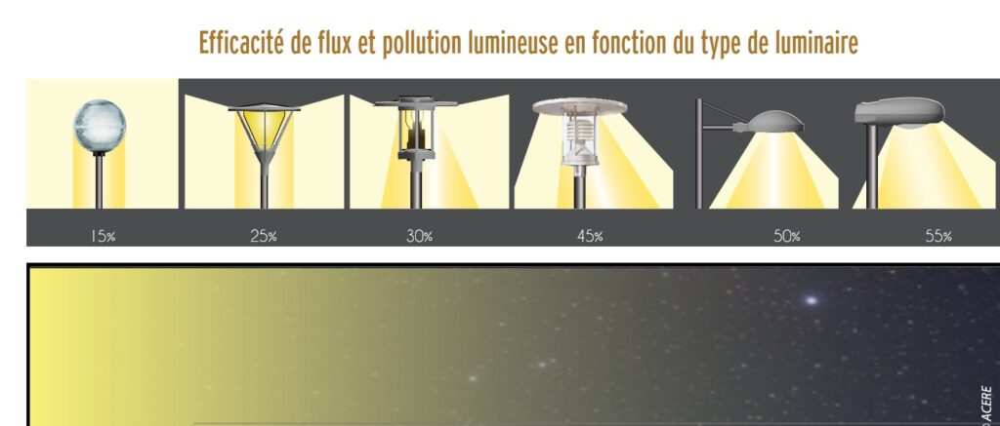

Thématique 4 : Pollution Lumineuse et Trame Noire
🌌 Préserver l'obscurité, un enjeu écologique
La pollution lumineuse, ou Lumière Artificielle Nocturne (ALAN), représente une menace silencieuse pour la biodiversité du Haut-Jura. Elle désoriente les espèces migratrices, perturbe les cycles de reproduction et fragmente les habitats naturels nocturnes.
Cette carte présente la dynamique spatio-temporelle de la lumière entre 1992 et 2012. Elle permet d'identifier les zones où la pression lumineuse augmente et celles où les efforts de sobriété portent leurs fruits, afin de mieux protéger nos "réservoirs d'obscurité".
📖 Comment afficher la légende ?
Pour comprendre la signification des couleurs, cliquez sur l'icône "Menu" (les 3 barres horizontales ☰) située dans le coin supérieur gauche de la carte interactive.
Modèles de luminaires et impacts lumineux

La régulation du matériel d'éclairage est le premier levier pour réduire la pollution lumineuse. En privilégiant des luminaires dirigés vers le sol et des spectres de couleurs chaudes, les communes limitent la diffusion de lumière vers l'atmosphère et les habitats naturels. Cette démarche de sobriété technologique permet de concilier sécurité publique et préservation de la biodiversité nocturne.